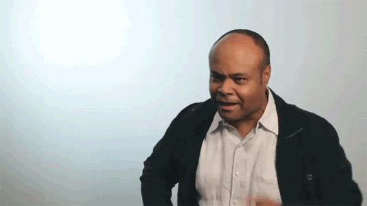

NOMAS magazine gazes at people and places with the curiosity, the joy and the longing of a nomad, the desire to belong, even for a while, to another culture.Every issue explores a different destination, or a theme. The magazine is the common ground for photographers, artists, writers and creative wanderers who share the same passion, for experiencing and documenting travel narratives about the unseen and the untold.NOMAS is a limited edition that shapes a contemporary perception in Art and the travel culture industry, through its most comprehensive, best curated and researched content.
| Title | Place |
| Platform Corporate Identity & Exhibition | The city of Munich |
| La Biennale di Venezia | The Venice Pavilion |
| Die neue Sammlung | Pinakothek der Moderne Munich |
| Good Job | |
|  | Very Good Job |